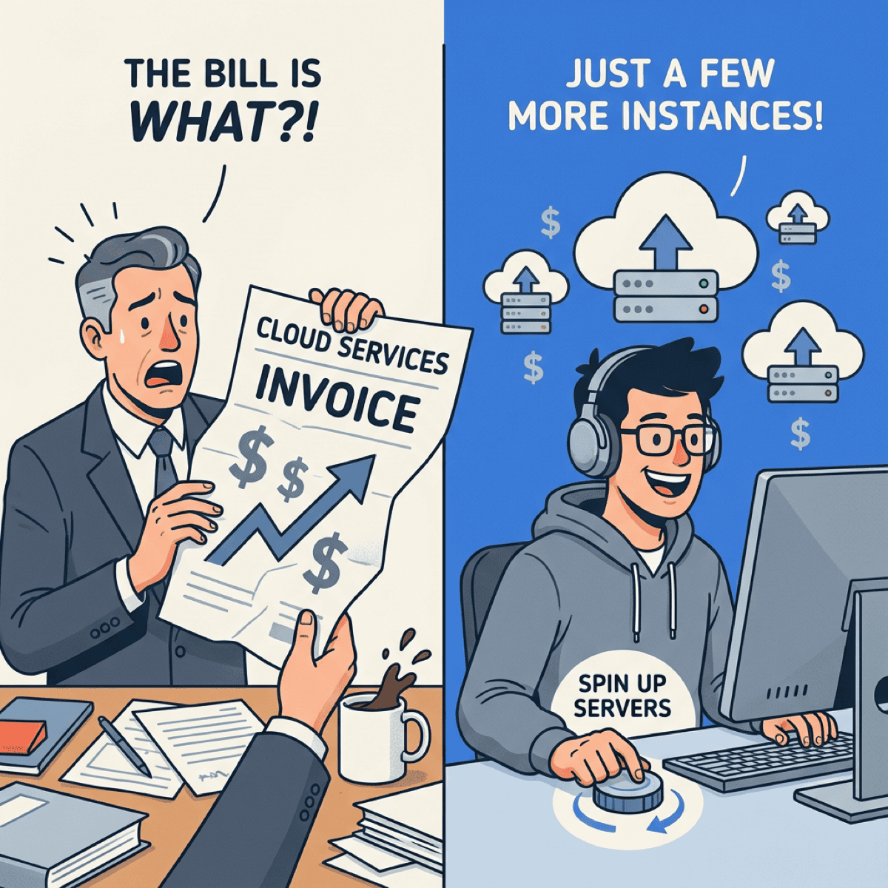

Why Your Cloud Bill Keeps Surprising You (And How to Fix It)

TL;DR
- 78% of businesses don’t know their cloud costs changed until the bill arrives—this is a visibility problem, not a spending problem
- 81% report costs on track when engineering teams share accountability for cloud spend
- The fix isn’t better tools—it’s structural: showback before chargeback, cost in the dev workflow
- Start with one team, give them visibility, watch behavior change, then scale
78% of businesses don’t know their cloud costs have changed until the invoice lands in their inbox. That’s like learning your credit card balance from the collections agency.
And it gets worse. 32% of all cloud spending is pure waste—approximately $216 billion in 2024 based on Gartner’s $675 billion forecast. Not “could be optimized.” Waste. Idle instances. Orphaned storage. Over-provisioned databases that nobody touched in six months.
If you’re a CTO or CFO reading this, you’ve probably felt that sinking feeling when the monthly AWS or Azure bill shows up 40% higher than expected. You’re not alone—69% of organizations report cloud budget overruns.
But here’s what most people get wrong: they treat this as a cost problem. It’s not. It’s a visibility and accountability problem. And until you fix that, no amount of cost-cutting tools will help.
I’ve worked with companies across healthcare, fintech, and manufacturing—all wrestling with the same challenge. The pattern is always the same: finance panics, engineering scrambles, and everyone points fingers at tools instead of structures. The bills don’t surprise you because your tools are bad. They surprise you because your system is designed to produce surprises.
The surprise isn’t the problem—it’s the symptom
When cloud bills surprise you, it’s a signal that your organization has a structural blind spot. Nobody knows who’s spending what until it’s too late.
The data is stark. According to CloudZero’s 2024 report, 89% of respondents said that lack of cloud cost visibility impacts their ability to do their jobs. When asked how well they can attribute spend to business units, 42% said they can only estimate. Over 20% admitted they have “little to no idea” what different aspects of their business cost in the cloud.
Think about that. A fifth of organizations are flying blind.
Your cloud bill surprises you because nobody owns the spending until it’s already spent.
— Clarke Bishop
The typical response is to buy a FinOps tool—a dashboard that aggregates costs and sends alerts. But dashboards don’t change behavior. By the time you get an alert, the money is already gone.
This is a visibility problem wearing a technology costume.
I’ve watched companies spend six figures on cost management platforms, only to see the same budget surprises quarter after quarter. The tool wasn’t the problem. The structure was.
Why engineering teams don’t think about cost
Here’s an uncomfortable truth: most engineering teams have zero incentive to care about cloud costs. And that’s by design—bad design, but design nonetheless.
Engineers are measured on shipping features, maintaining uptime, and reducing technical debt. Nobody puts “kept infrastructure costs flat” on their performance review. So when an engineer spins up an extra-large instance “just to be safe,” or forgets to tear down a test environment, there’s no feedback loop.
The numbers reflect this disconnect. 52% of engineering leaders say the gap between FinOps and development teams leads directly to wasted spend.
And visibility is shockingly poor. According to the same Harness research, only 43% of teams have real-time data on idle resources. Only 39% can see orphaned or unused resources. Just 33% have visibility into over-provisioned workloads.
Without visibility, waste is invisible. Without accountability, nobody fixes it. The result? It takes an average of 31 days to identify and eliminate waste without automation. A month of burning money before anyone notices.
When engineers can’t see costs and aren’t accountable for them, they make decisions in the dark. Then CFOs get surprised.
This isn’t malice. It’s incentive design. Engineers are doing exactly what they’re rewarded to do—ship fast, stay reliable, reduce technical debt. Cloud cost efficiency just isn’t on the list. And when something isn’t measured, it doesn’t get managed.
What actually works: visibility before accountability
The good news? Companies that get this right see dramatically better outcomes.
According to CloudZero, 81% of companies report their cloud costs are “on track” when engineering teams hold some level of accountability for spending. That’s not a marginal improvement. It’s a fundamental shift.
But you can’t jump straight to accountability. You have to build visibility first.
The proven sequence is:
- Visibility — Show teams what they’re spending
- Awareness — Help them understand why it matters
- Accountability — Create ownership for outcomes
- Behavior change — Watch costs come under control
This is the difference between showback and chargeback. Showback means showing teams their costs without billing them internally. Chargeback means actually allocating those costs to their budgets.
Most organizations should start with showback. It builds trust, validates data accuracy, and gives teams time to learn their cost drivers before facing consequences.
Here’s why the sequence matters so much. If you jump straight to chargeback—billing teams for their cloud usage—without first giving them visibility, you create anxiety without agency. Teams feel blamed for costs they didn’t know they were incurring. The result? Defensiveness, finger-pointing, and gaming the metrics instead of actually reducing waste.
This isn’t a technology problem. It’s a visibility problem wearing a technology costume.
— Clarke Bishop
Real results come from this approach. Innovaccer, a healthcare technology company, right-sized their EC2 instances based on Compute Optimizer visibility and reduced overall cloud overhead costs by 33% over three years. They also cut management overhead by 65%, freeing engineers to focus on value-creating work instead of firefighting.
Companies with mature FinOps practices consistently reduce costs by 20-30% while actually increasing cloud usage. They’re not spending less on cloud—they’re wasting less.
The key insight here is counterintuitive: the goal isn’t to cut costs. It’s to eliminate waste so you can invest more in what matters. Teams that get visibility often end up spending more on cloud—but on the right things.
The three structural fixes
Stop buying tools. Start changing structure.
Fix 1: Make costs visible at the team level
Every engineering team should see what their services cost to run. Not buried in a finance report—visible in their daily workflow.
Implement showback reporting by team, product, and feature. When an engineer ships a change, they should know within days (not months) what it did to costs. Weekly cost reviews replace monthly surprises.
The goal isn’t to make engineers into accountants. It’s to give them the information they need to make better decisions. When someone sees that their test environment costs $3,000 a month to keep running, they’ll shut it down.
Fix 2: Create accountability without punishment
Accountability doesn’t mean blame. The worst thing you can do is make engineers feel punished for cloud costs—they’ll just hide problems instead of fixing them.
Start with showback. Let teams see their costs and learn their patterns. Celebrate wins when teams reduce waste. Make cost optimization a positive achievement, not a defensive exercise.
If you eventually move to chargeback (billing costs to team budgets), do it gradually. Give teams time to adjust. And never use cost as the only metric—a team that ships a high-value feature and increases costs appropriately shouldn’t be penalized.
Fix 3: Build cost into the development workflow
The best decisions happen in the moment. If engineers only see cost implications in quarterly reports, it’s too late.
Integrate cost visibility into:
- Pull request reviews — Show estimated cost impact before code merges
- Deployment pipelines — Surface cost changes in CI/CD
- Architecture decisions — Include cost in technical design reviews
The goal is making the right choice the easy choice. When cost information is immediate and contextual, engineers naturally factor it into their decisions.
One company I worked with added a simple cost estimate to their infrastructure-as-code templates. Before an engineer could provision resources, they saw the monthly cost. Nothing else changed—no approvals, no blockers. Just information. Over six months, their average instance size dropped 40%, while performance stayed the same.
Start small, then scale
You don’t need to transform your entire organization overnight. Start with one team.
Pick a team with visible cloud spend and receptive leadership. Give them access to their cost data. Set up a weekly 15-minute review. Watch what happens.
In my experience, teams that see their costs start asking questions. “Why is this service so expensive?” “What’s that orphaned database?” “Can we use a smaller instance type?”
Those questions lead to action. And when one team reduces their cloud waste by 20%, other teams notice. Success scales.
The transformation doesn’t require a big-bang initiative. Pilot with one team. Prove the model works. Let the results speak for themselves. Within six months, other teams will be asking for the same visibility.
Your cloud bill surprises you because you’ve designed a system where nobody owns the spending until it’s already spent. The fix isn’t a new dashboard or a smarter alert. It’s making infrastructure costs visible to the people who control them—and giving them a reason to care.
Start with visibility. Add accountability. Build cost awareness into the workflow. The surprises will stop.
Ready to get your cloud costs under control? Let’s talk about how fractional CTO support can help your team build the visibility and accountability structures that actually work.